2026-04-01
GWAS in the UK Biobank — and why quality control matters before any analysis.
Key QC checks to always perform:
Note
We went through the UKB QC examples quickly last time — refer back to the L3 slides for the full details.
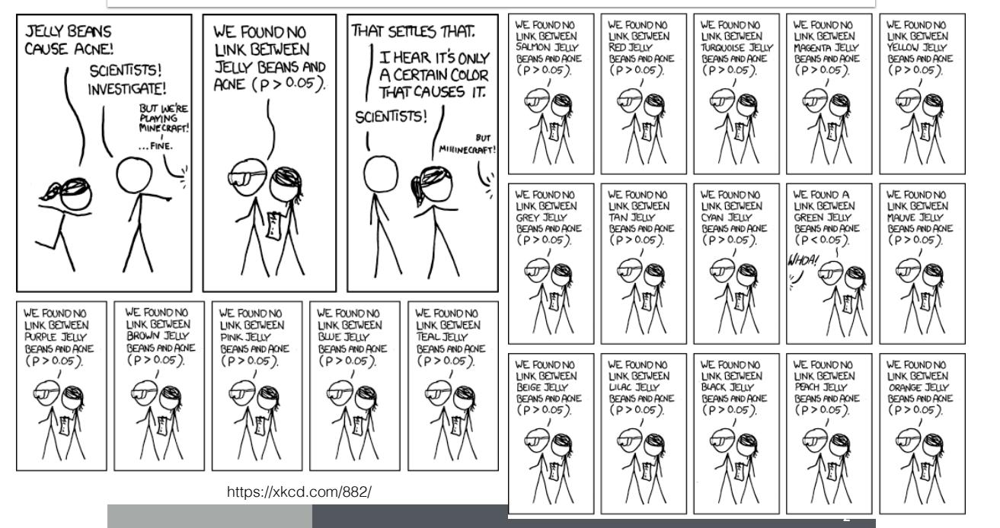
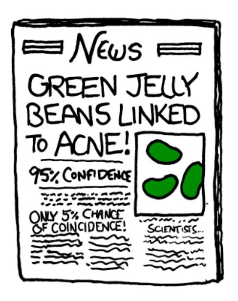
What happened? Is the conclusion sensible?
What is the probability of not rejecting the null (staying safe from false positives) when testing at α = 0.05?
| Number of tests | P(no false positive) |
|---|---|
| 1 | (1 − 0.05)^1 = 0.95 |
| 2 | (1 − 0.05)^2 = 0.90 |
| 100 | (1 − 0.05)^100 = 0.0059 |
Homework: Plot P(no false positive) as a function of the number of tests m.
How do we solve this problem?
\[\alpha_{\text{Bonferroni}} = \frac{0.05}{\text{number of tests}}\]
When in doubt: divide 0.05 by the number of tests and use this more stringent cutoff.
Q: What could be the downside of using this very stringent threshold?
\[5 \times 10^{-8}\]
Q: If this were a Bonferroni threshold, how many tests are we correcting for?
Q: Is the number of tests = the number of SNPs tested in a GWAS?
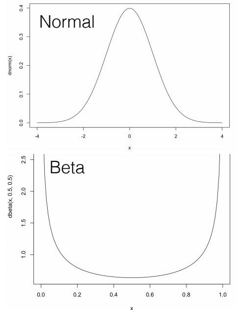
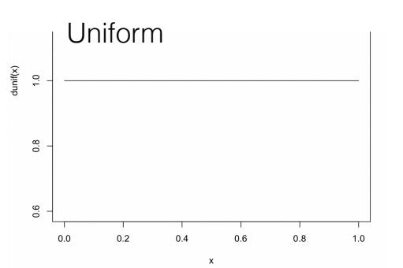
Q: Can you rule out some of these distributions based on the definition of a p-value?
To develop intuition for how p-values behave under the null and alternatives, we run simulations.
\[Y_{\text{null}} = X \cdot 0 + \epsilon' \quad \text{(no true effect)}\]
\[Y_{\text{alt}} = X \cdot \beta + \epsilon \quad \text{(true genetic effect)}\]
nsamp = 100 # sample size
beta = 2 # effect size
h2 = 0.1 # heritability (proportion of variance explained by X)
sig2X = h2
sig2epsi = (1 - sig2X) * beta^2
sigX = sqrt(sig2X)
sigepsi = sqrt(sig2epsi)https://bios25328.hakyimlab.org/post/2022/04/06/multiple-testing-2022/
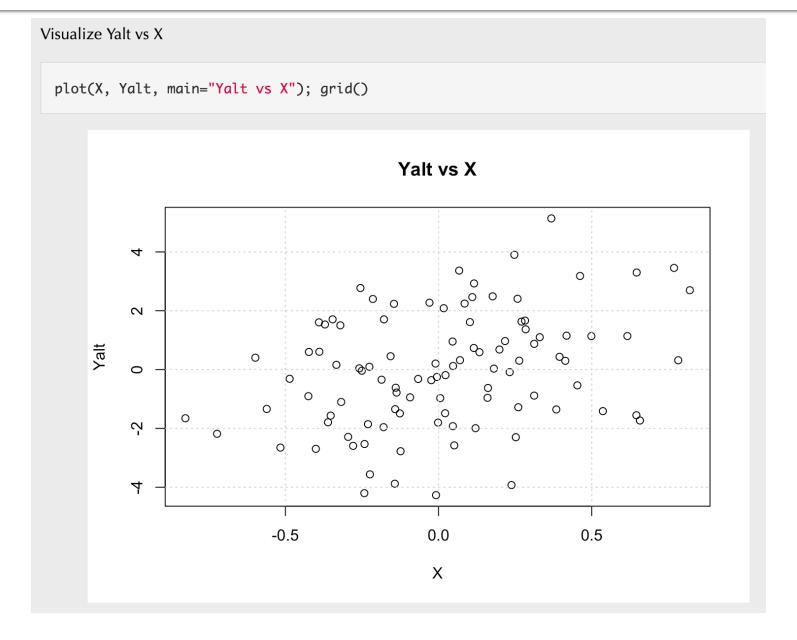
https://bios25328.hakyimlab.org/post/2022/04/06/multiple-testing-2022/
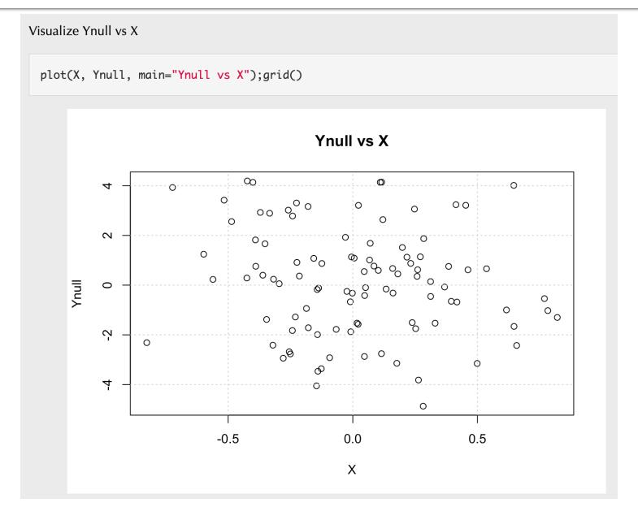
https://bios25328.hakyimlab.org/post/2022/04/06/multiple-testing-2022/
Run lm() and extract the p-value from the summary() output:
summary(fit)$coefficients is a matrix with one row per term:
| Estimate | Std. Error | t value | Pr(>|t|) | |
|---|---|---|---|---|
| (Intercept) | … | … | … | … |
| X | … | … | … | ← p-value |
Repeat the regression 10,000 times, save the p-values, plot the histogram.
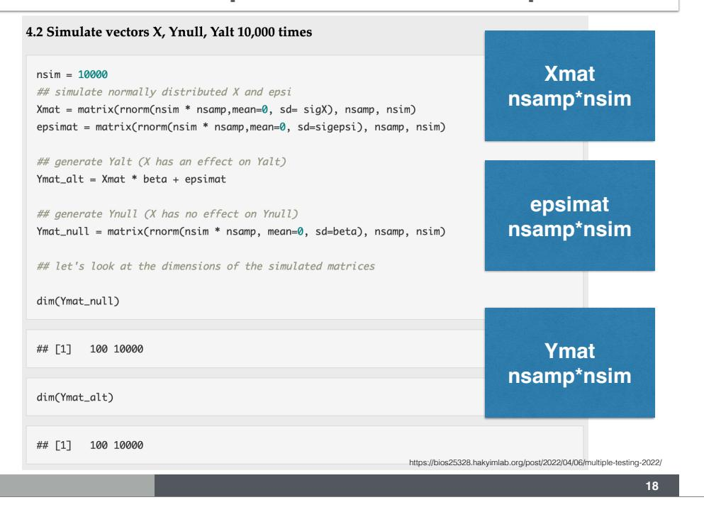
https://bios25328.hakyimlab.org/post/2022/04/06/multiple-testing-2022/
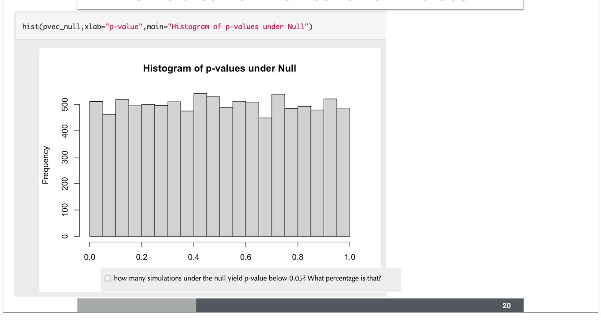
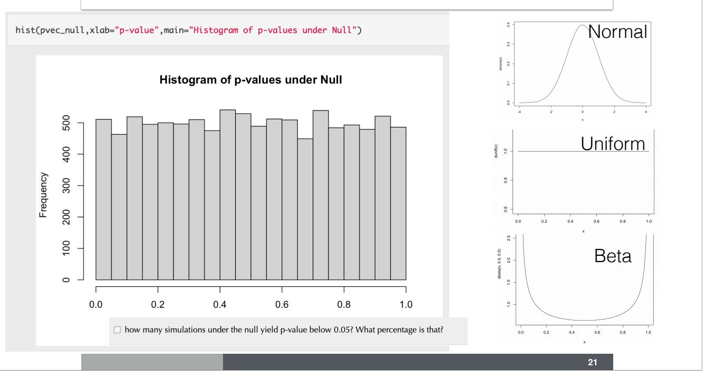
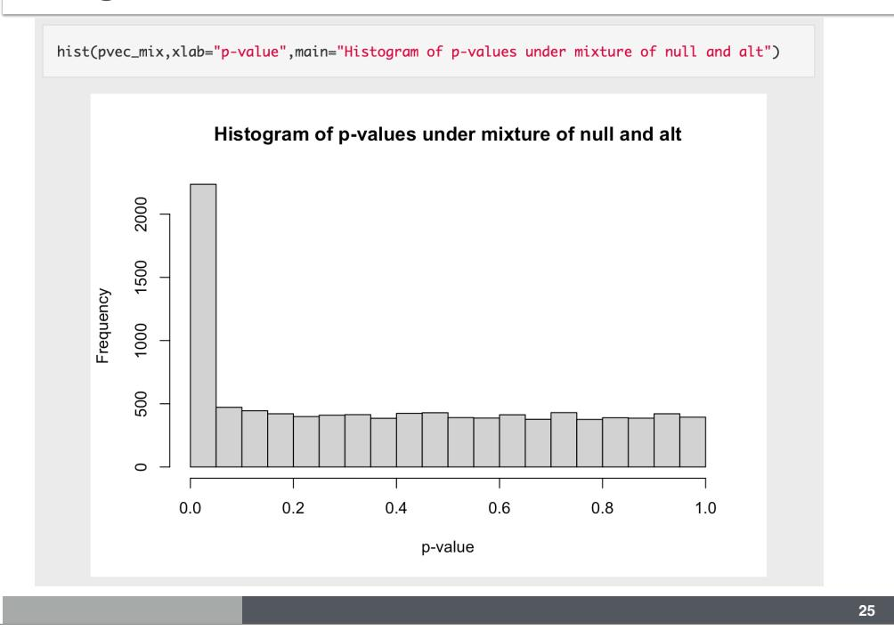
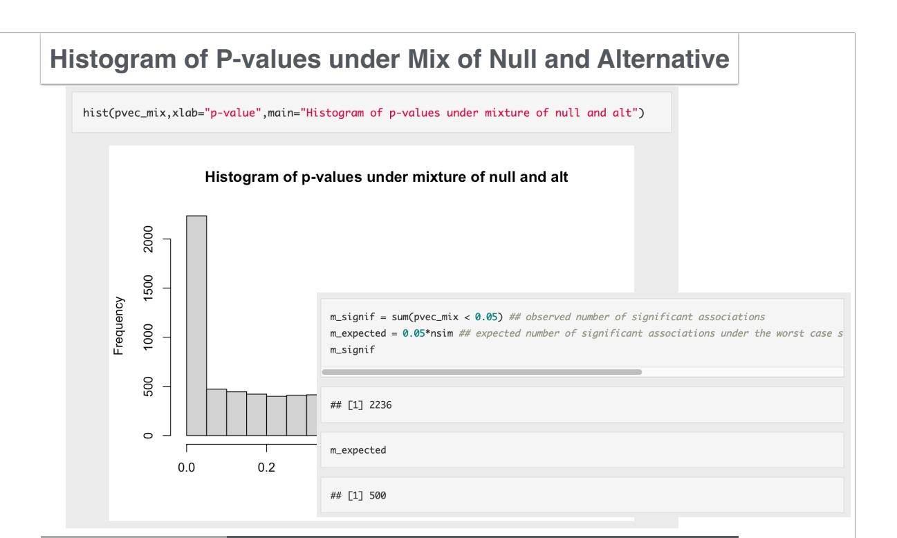
| Called Significant | Called not significant | Total | |
|---|---|---|---|
| Null true | F | \(m_0 - F\) | \(m_0\) |
| Alt true | T | \(m_1 - T\) | \(m_1\) |
| Total | S | \(m - S\) | \(m\) |
Bonferroni correction
Controls Family-Wise Error Rate (FWER):
\[P(F \geq 1) < \alpha\]
Achieved by requiring \(p < \alpha / \text{# tests}\)
False Discovery Rate (FDR)
\[\text{FDR} = E\left(\frac{F}{S}\right)\]
q-value: minimum FDR attainable when a feature is called significant
Under the null, we expected 500 significant results by chance but got 2,236.
\[\widehat{\text{TDR}} = \frac{\text{observed significant} - \text{expected under null}}{\text{observed significant}} = \frac{2236 - 500}{2236} \approx 0.78\]
\[\widehat{\text{FDR}} = 1 - \widehat{\text{TDR}} \approx 0.18\]
| Called Significant | Called not significant | |
|---|---|---|
| Null true | 411 | 7545 |
| Alt true | 1825 | 219 |
Q: What are the false positive rate and power in this simulation?
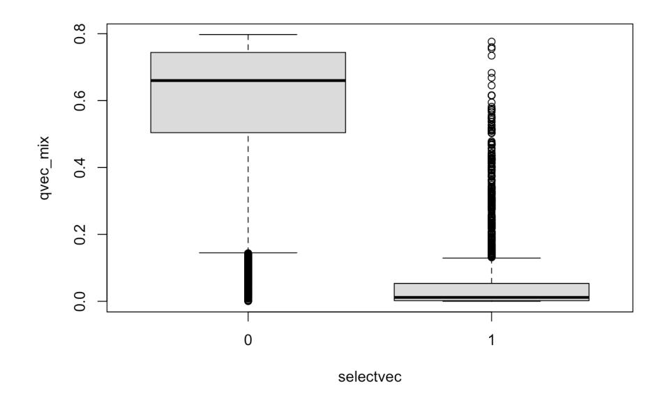
When all tests are null: \(\pi_0 \approx 1\)
When 80% are null: \(\pi_0 \approx 0.8\)
| Method | Controls | Stringency | Best for |
|---|---|---|---|
| Bonferroni | FWER: P(any false positive) | Very strict | Few tests, high cost of any error |
| FDR / q-value | E(false positives / significant) | Moderate | Many tests, many true signals |
GWAS significance threshold: 5 × 10⁻⁸ (Bonferroni for ~1M independent tests)